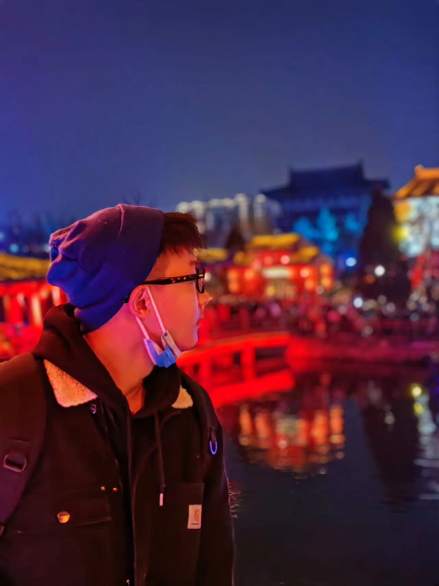
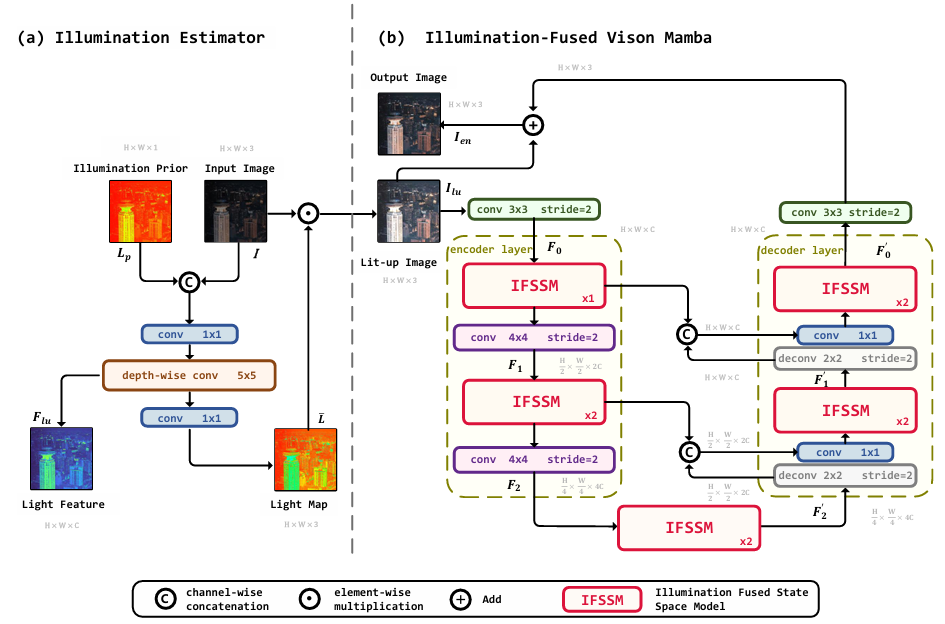

Jiesong Bai(白洁松)4th-year Undergraduate Student@SHUIncoming Phd Student@SJTU
Shanghai University |
 |


Biography
I am a 4th-year undergraduate student majoring in Communication Engineering at Shanghai University (SHU), and I hope to receive my Bachelor's degree in July 2025. I also fortunately become a incoming PhD Student studied in the MIN@SJTU led by Prof. Dr. Hongkai Xiong. Currently, I am doing research here, supervised by Prof. Wenrui Dai
My research interests include Deep Learning and AI System. From 2023, I started to do some research on Computer Vision, including talking head generation and low level vision. Now, I'm starting to explore the research related to distributed training cluster optimization, mainly focus on Collective Communication. And I'm also interested in some LLM and AIGC Applications.
Feel free to contact me by email if you are interested in discussing or collaborating with me.
News
- [04/2025] One paper was accepted by IJCAI 2025 !
- [04/2025] One paper was accepted by IJCNN 2025 !
- [11/2024] Awarded Outstanding Scholarship for Academic Excellence (the third time) of Shanghai University !
- [10/2024] Awarded National Scholarship in the first place in the SCIE@SHU !
- [09/2024] I fortunately became an incoming PhD Student@SJTU, supervised by Prof. Hongkai Xiong !
- [08/2024] One paper was accepted by ICONIP 2024 !
- [06/2024] Excited to release RetinexMamba's Code with collaborator Yuhao Yin. Code Repo here RetinexMamba !
- [05/2024] Fortunately be invited to be a reviewer for IEEE Transactions on Artificial Intelligence!
- [11/2023] Awarded Outstanding Scholarship for Academic Excellence of Shanghai University !
- [07/2023] I started to do some research on talking head generation(SHU's Outstanding Undergraduate Project) !
- [11/2022] Awarded Outstanding Scholarship for Academic Excellence of Shanghai University !
- [09/2022] Joined SCIE@SHU!
- [09/2021] Started my first undergraduate year in Shanghai University!
Industrial Experience
Education & Visiting
|
Shanghai Jiao Tong University, Shanghai Incoming PhD Student in MIN, SJTU Advisor: Prof. Hongkai Xiong Sep. 2025 - Future
|
|
|
Shanghai University, Shanghai Bachelor of Engineering in Communication Engineering Sep. 2021 - Jul. 2025 (expected)
|
|
Selected Publications | Full List
| /*Conference*/ | |
|  |
Retinexmamba: Retinex-based Mamba for Low-light Image Enhancement Jiesong Bai*, Yuhao Yin*, Qiyuan He, Yuanxian Li, Xiaofeng Zhang (* equal contribution) The International Conference on Neural Information Processing (ICONIP), 2024. |
Honors & Awards
| [11/2024] Outstanding Scholarship for Academic Excellence of Shanghai University. |
| [10/2024] National Scholarship in the first place in the SCIE@SHU. |
| [11/2023] Outstanding Scholarship for Academic Excellence of Shanghai University. |
| [11/2022] Outstanding Scholarship for Academic Excellence of Shanghai University. |
| [10/2022] Excellent Student of Shanghai University. |
Professional Services
-
Student Reviewers:
IEEE Transactions on Artificial Intelligence (TAI)